I'm a mechanical engineering student at Cal Poly, San Luis Obispo, graduating in December 2026. Most of my
work is mechanical design for hardware that has to run in the real world, plus the electronics and code that
drive it: production test stands, drone payloads, and the fixtures used to measure them.
This summer I interned at Western Magnetics, where I built the end-of-line test stand that now checks every
motor coming off their line. Before that I spent six months at Voliro in Zurich developing aerial inspection
and repair payloads. I'm now leading a Voliro-sponsored senior project at Cal Poly: a drone-mounted robotic arm
that scans steel structures for defects.
I'm looking for full-time mechanical, robotics and hardware roles starting in early 2027.
Education
California Polytechnic State University, San Luis Obispo
English, Swiss German (conversational), French (conversational)
Experience
Western Magnetics Company
Jun – Aug 2026
Mechanical Engineering Intern · South San Francisco, CA
Designed and built the end-of-line test stand that grades every motor off the production line, screening
electrical imbalance, vibration and drag in a 45-second cycle. It ran over 4,400 cycles by August.
Set up an in-line magnet bond strength test that caught an under-cured batch before it shipped, and
qualified an adhesive 2–3x stronger, taking adhesion failures from over 70% to near zero.
Owned custom wire-EDM tooling from design through fabrication, and set up an outside machining partner
that turns around urgent tooling in about a week.
Traced motor KV variation to magnet thickness and the lamination tolerance stack-up, then built a
measurement fixture so the team could quantify and control it.
Developed aerial spot-repair payloads with Monti Power from concept to flight-tested prototypes, proving
out an inspect-and-repair workflow on one platform that Voliro now sells as a service
(the Aeroblaster).
Restructured legacy payload assemblies in SolidWorks into modular CAD so new payloads could be added and
updated without rebuilding the tree.
Designed a cooling solution for a next-generation drone radio and built a 40 °C environmental chamber to
verify it ran continuously at worst-case ambient temperature.
“He consistently delivered ready-to-use product prototypes while working on highly open-ended
engineering tasks.”
FRC Team 670, Homestead High School
Aug 2021 – Jun 2022
Mechanical Lead · Cupertino, CA
Led design and fabrication using mills, laser cutters, CNC routers and 3D printers.
Designed and added a vacuum and compressed-air system to the team's CNC router so it could cut aluminum.
Team won the FIRST Quality Award and the 2022 Cal Games championship.
Projects
Aeroblaster: find-it, fix-it repair for the Voliro T Voliro AG internship, with Monti Power
Jul – Dec 2025
Corrosion on silos, tanks and other tall steel structures usually means scaffolding or rope access and a
shutdown, even for a small spot. The Voliro T drone could already find that corrosion through contact
inspection. This project made it able to fix it on the same flight.
Led development of the blaster payload, built around Monti Power's Bristle Blaster head, from concept to
a 3D-printed PLA prototype in one week, then through nylon and CNC-machined metal versions to bring it as
close to production as possible.
Designed its core mechanical architecture, which the production Aeroblaster still uses after later
iterations. The payload weighs under 800 g.
Moved the frame from printed plastic to aluminum so it doubles as the heat sink: the drive motor mounts
directly to it, hidden behind the transmission cover.
Designed and prototyped a filtered cooling housing with a fan driven by the motor's own rotation. The fan
creates negative pressure that pulls air in through filters, keeping fine metal dust from blasting out of the
motor.
Designed the coating roller payload. The roller in use today is my version.
Together the two payloads complete the workflow on one platform: inspect, blast the spot to bare metal,
roll on a protective coating, and log it all with photos and timestamps.
The payload preps steel to a profile comparable to SSPC-SP 11 (25 µm or more), validated by an independent
lab and reviewed by SGK, the Swiss Society for Corrosion Protection.
On its first field job it repaired three 30 × 30 cm patches on a cement plant silo in under an hour,
with no production downtime.
“credit to Eric Decasper and the Voliro and MontiPower team for pushing the technical development and
showing what is achievable.”
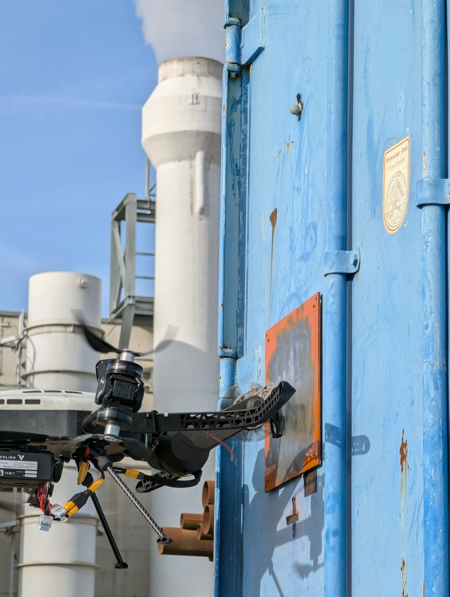
The Aeroblaster stripping a rusted panel at an industrial site
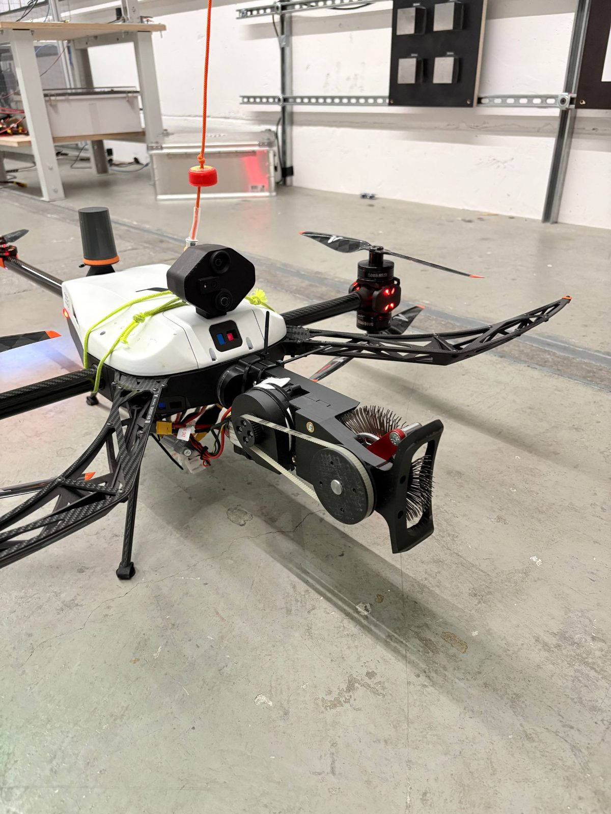
The first 3D-printed prototype on the Voliro T, before the move to an aluminum frame
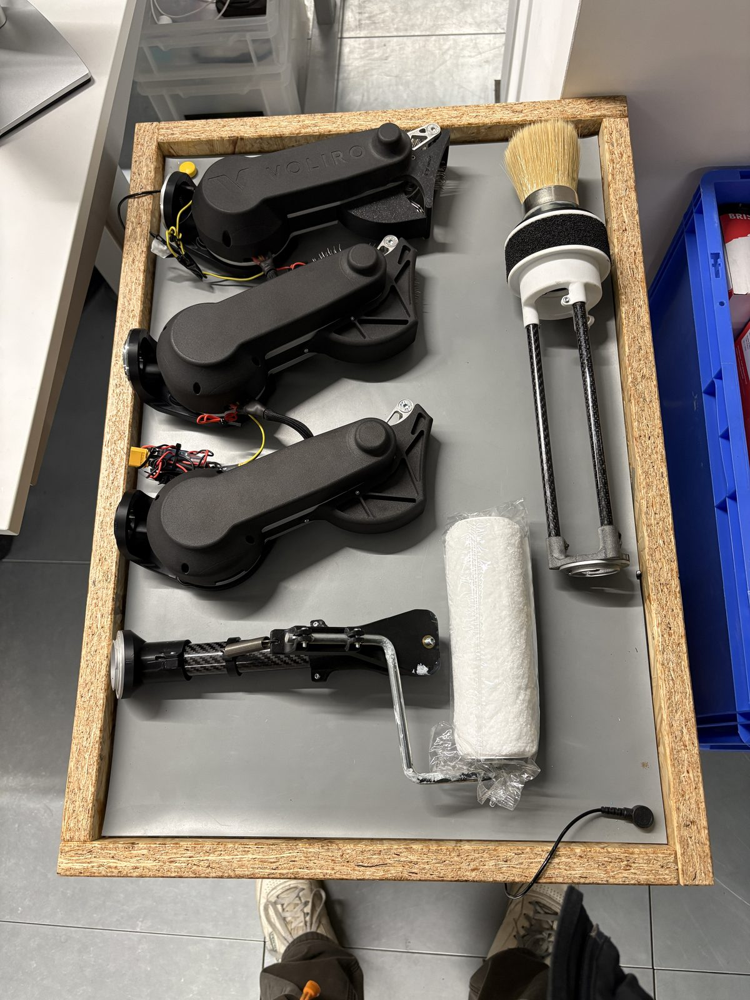
The payload set: three blaster units, the coating roller and a brush tool
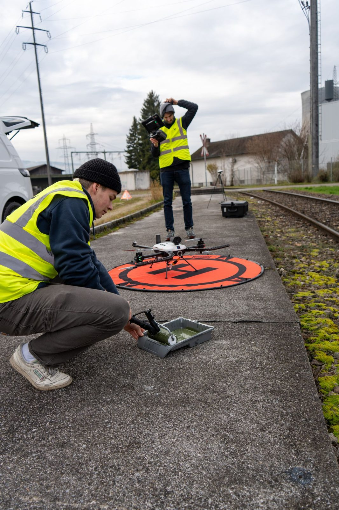
Field-testing the coating roller on a real asset with Voliro CEO Timo Müller
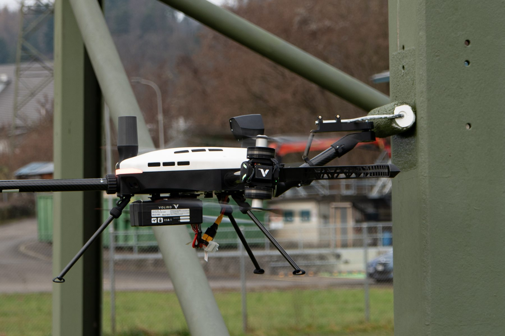
The coating roller painting a steel pylon from the Voliro T
IoT sensor placement payload Voliro AG internship
2025
Corrosion under insulation (CUI) is hard to catch because it hides beneath the cladding on pipes and
vessels. Senergetics makes the I-tiQ, a wireless ATEX-certified sensor that clamps to the outside of the
insulation without drilling and feeds data to an AI platform that flags where CUI is forming. This payload lets
the Voliro T place those sensors from the air.
Did the mechanical design of the sensor deployment payload, with direction from Dennis den Elzen,
Voliro's product manager.
The payload is now in use in real industrial environments.
Ready for takeoff at an industrial site, under the pipe racks it places sensors on
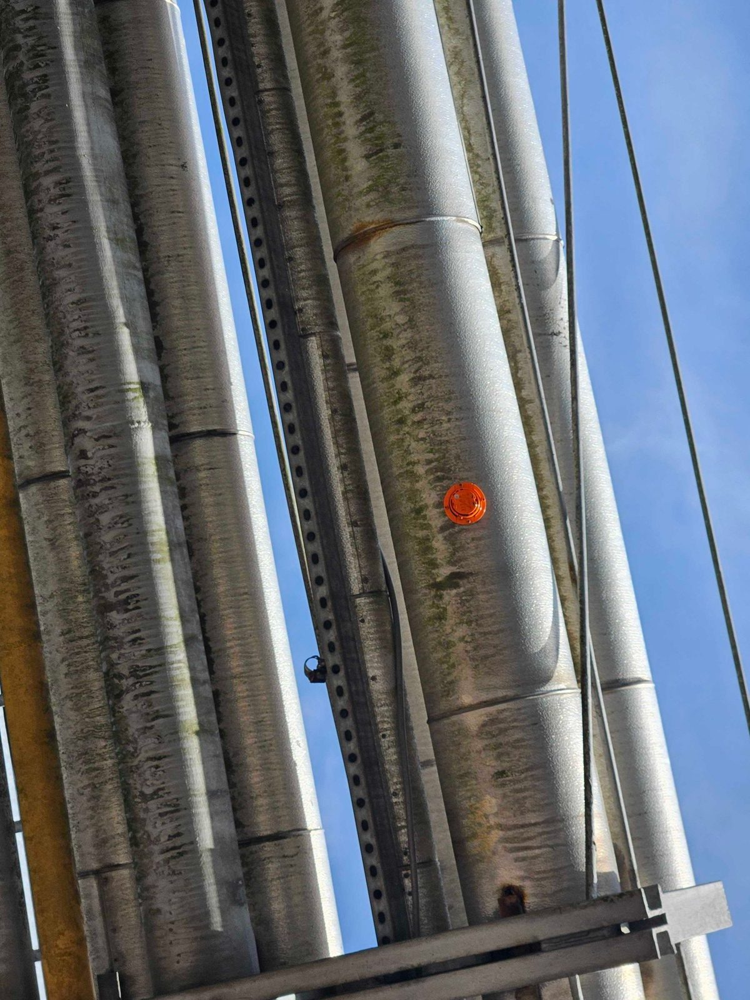
A sensor placed on insulated pipe in a pipe rack
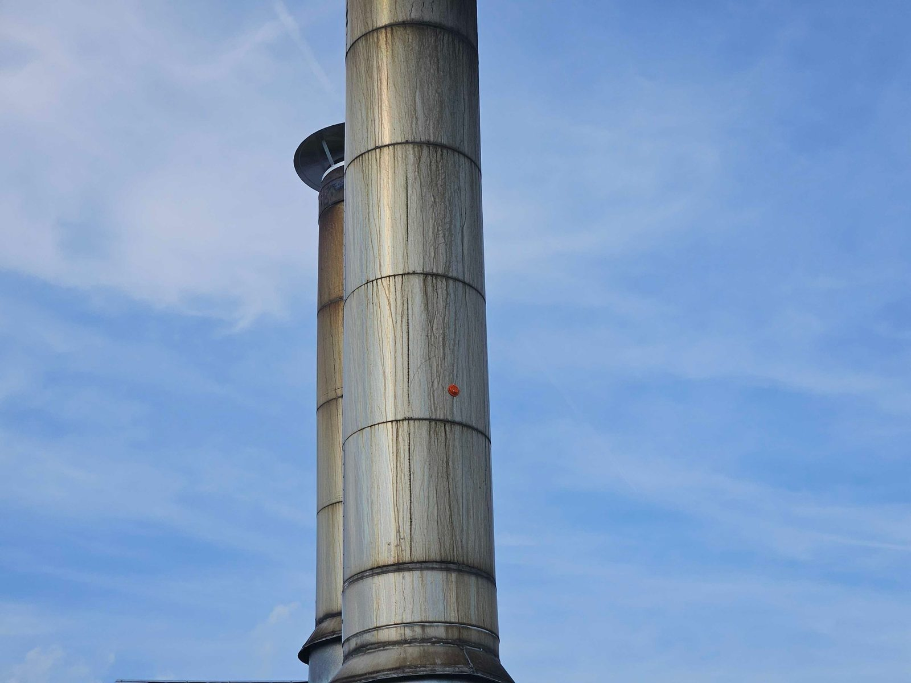
A sensor placed high on an exhaust stack
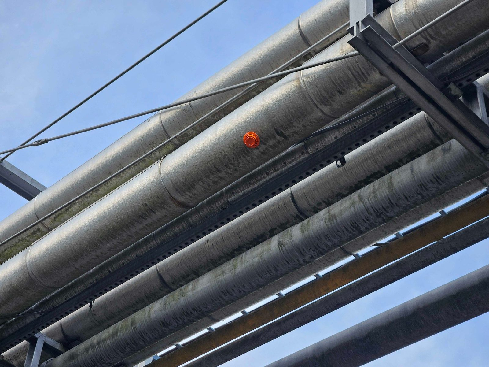
A sensor on an overhead line, out of reach without a lift or scaffolding
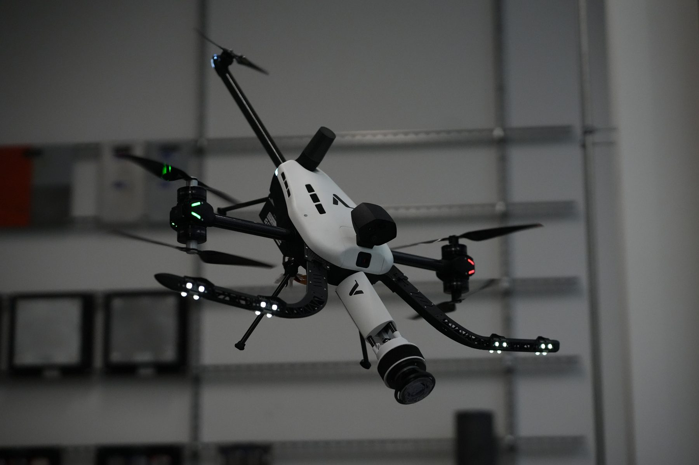
The payload in flight testing at Voliro
Aerial scanning arm Senior project, sponsored by Voliro AG
Jan 2026 – now
Leading a team building a drone-mounted robotic arm that sweeps an electromagnetic sensor across steel
structures to find defects at height.
Designed the two-link carbon fiber arm to stay under a 1 kg limit, and its control system: a Teensy 4.1
running inverse kinematics to drive two DYNAMIXEL servos.
Designed a custom carrier PCB for the Teensy, split into a main board and a servo hub so it fits on the
airframe and survives vibration. Boards are in fabrication now.
Bench-tested the payload on real steel assets; now integrating it on a Voliro drone shipped to Cal Poly
for our own flight testing.
Pants Pulleez: seated dressing aid ME 403 Access by Design, Cal Poly · team of three
Spring 2026
Built for a wheelchair user with muscular dystrophy who could get his pants to his knees with a grabber,
but couldn't pull them over his hips while seated. Two cords clip to the back of the waistband and run through
pulleys on a floor-to-ceiling tension pole beside the toilet. Pulling a handle down in front lifts one side of
the pants at a time, and the pole installs with no drilling.
Did all of the CAD, and designed and FDM-printed every custom part: pulley holders, boom brackets, rope
retainers and ball handles in PLA at 75% infill.
With a teammate, water-jet cut the post top plates, machined the lathe-turned adjustable-foot adapters
and coated the aluminum frame.
Held a 50 lb load through the full system with no failure, twice the user's estimated 25 lb maximum
pull.
Pulling down in front produced 73% more force than reaching back and pulling up (38 lb vs 22 lb),
confirming the core idea of the design.
Came in at $99 in purchased parts against a $150 budget.
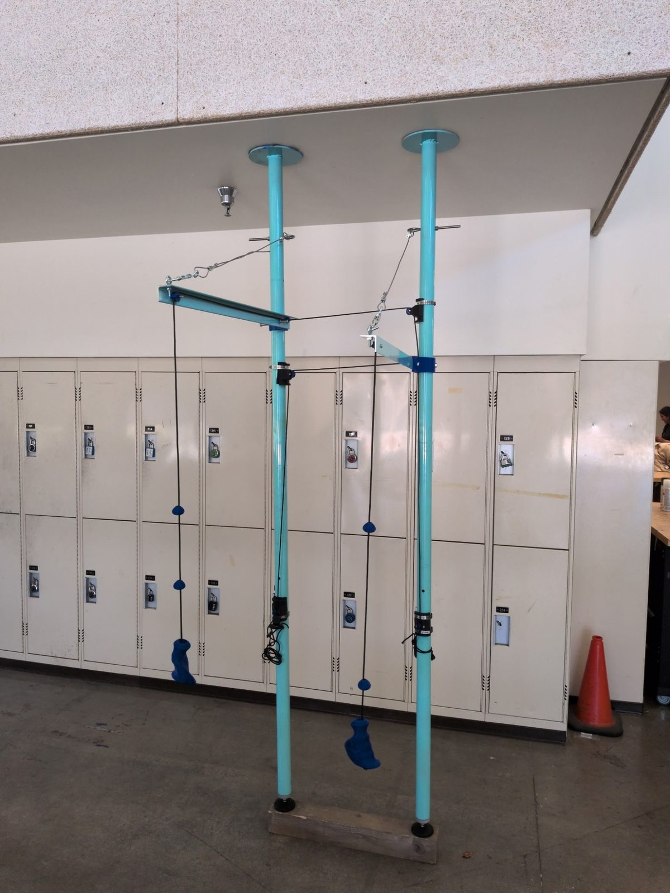
The finished prototype: tension poles, boom arms, pulleys and printed ball handles
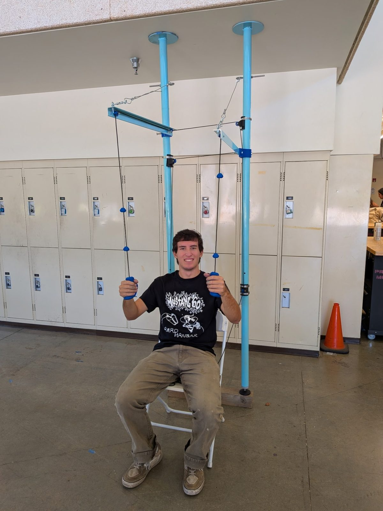
Teammate Joe Chiappetta demonstrating the pull-down motion
eFlesh touch sensing Machine learning project, Cal Poly
Aug 2025 – now
Turned a 3D printer into an automated test rig that presses a custom compliant foam sensor and labels its
own contact data.
Used that data to train a neural network that locates where the sensor is being touched.